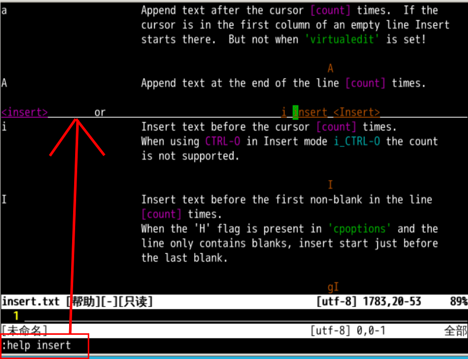
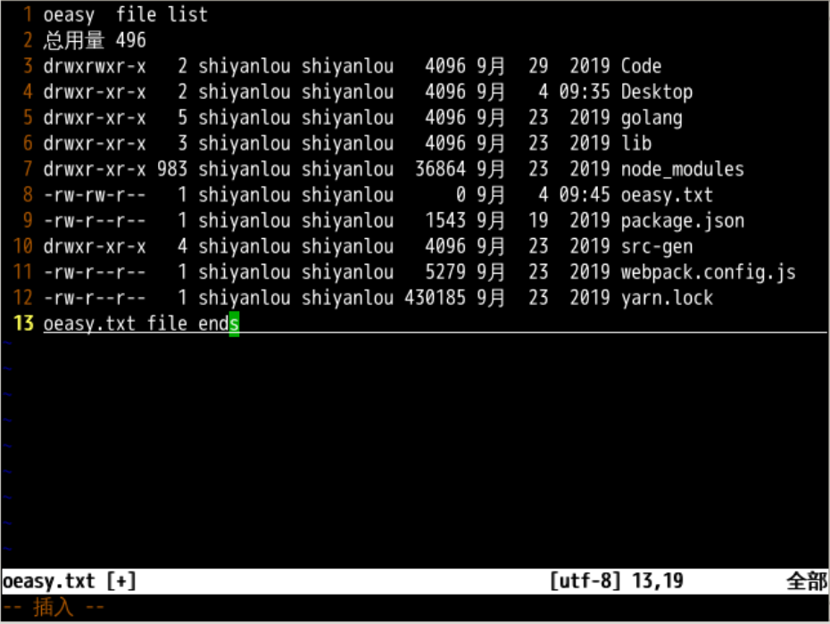
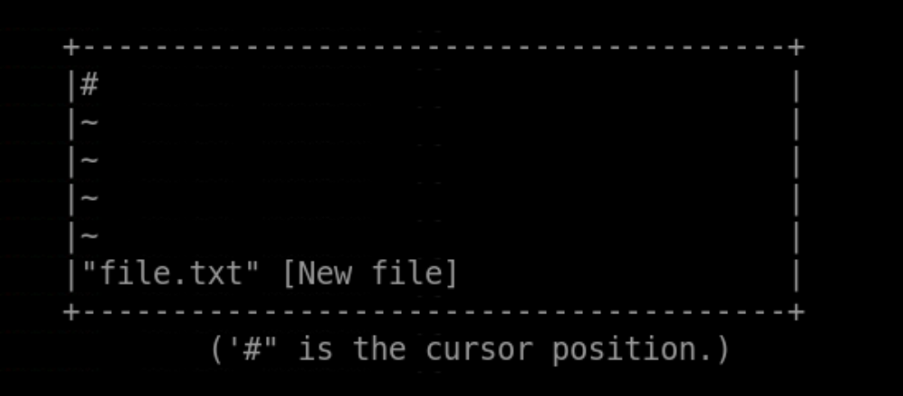
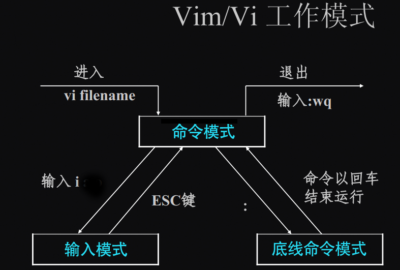
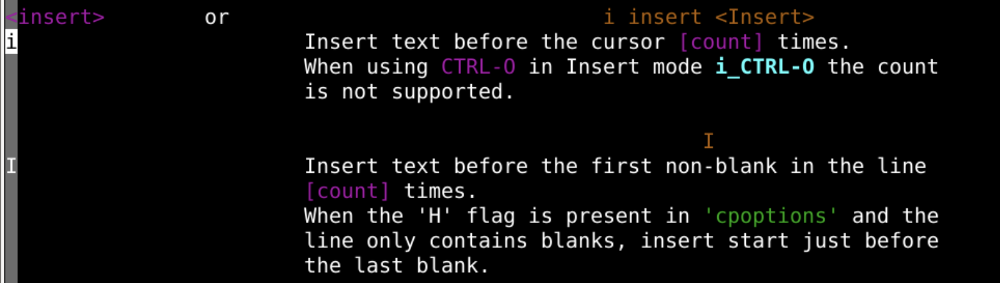
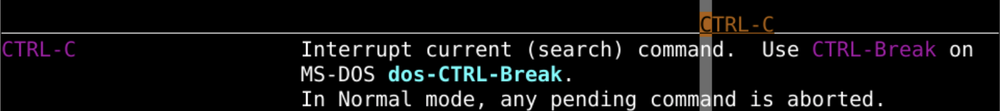
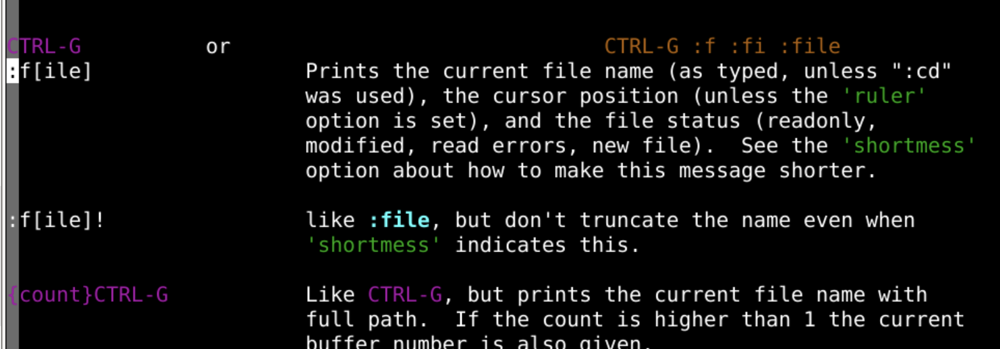

插入模式
回忆上节课内容

- 我们总结了，模式切换的方式
- 命令模式
Normal mode - 底线命令行模式
Command mode
- 命令模式
- 帮助文件的正确打开方式
:h
- 在文档中使用鼠标
set mouse=a- 建议不用鼠标
- 使用全键盘方式跳入跳出超链接
- ctrl+]
- ctrl+o
- 帮助文件的两种手册
- 用户帮助手册
- 引用帮助手册
- 这次我们来插入内容，修改文档
插入模式
想要插入内容的话，应该进入插入模式 (Insert mode)
- 首先我们还是打开上次的那个
oeasy.txt
ls -l . > oeasy.txt
vi oeasy.txt
- 然后如何进入插入模式呢？
- 我们使用
:help insert看看是否有什么命令

- 我们需要先退出帮助模式
:q
- 然后按下 i 进入插入模式
- 进入插入模式后
左下角状态栏会显示-- 插入 --- 这意味着已经进入了插入模式
- 时刻留意左下角
- 左下角就像小地图一样
- 是统管全局的所在
- 如果没有进入插入模式的话
- 可能因为处在新开的帮助中
- 先
:q退出帮助
插入文字🅰️
- 插入模式下我们可以任意打字
- 按键不再是命令而是输入字符
- 冒号回车都能打出来🤪

- 输入完成之后，又想要移动位置怎么办呢？
- esc 退回到命令模式
Normal mode - 或者 ctrl+c 回到命令模式
Normal mode - 尽量选择 ctrl+c 因为可以让双手保持正位
- 左手小指 ctrl + 右手食指 c
- 注意退回到命令模式后
- 左下角状态栏不再显示
-- 插入 -- - 而是变回空白
- 观察左下角
- 时刻注意
文件细节

- 注意有内容的地方是具体的文字内容
- 在没有内容的地方
- 前面会有
tilder(~)进行提示 tilder(~)意味着空行，就是啥都没有
使用 i 命令进入插入模式
- 按 i 再次进入插入模式
- 按 esc 或 ctrl+c 退回到命令模式

- 可以用 i 和 ctrl+c 反复切换模式
- 观察左下角
帮助细节
i到底什么意思？- 可以
:h他一下 :h i就是help一下i命令究竟做些什么

- 那 ctrl+c 是啥意思？
查询快捷键
- 什么不会就
:h什么 :h ctrl-c就是帮助我们查找一下ctrl-c快捷键究竟做些什么

- 同理还有
:h ctrl-g

- CTRL+G 对应着
:f[ile]命令 - 可以查看当前文件信息
尝试退出
- 输入
:q希望退出 - 但是屏幕 📟 显示如下
- 按照他的要求输入
:q! cat oeasy.txt显示文件并未修改😧- 原来
:q!只是不保存，强制quit退出 - 囧，虽然还没成功保存...
- 但是曾经真的插入文字了！😃
- 我们先总结一下📘
总结
- 我们这一次进入了插入模式
- 在正常模式下使用命令 i
- 在插入模式下使用 esc 退回到正常模式
- 使用
:q!不保存强制退出 - 哎～看来保存只能下次再说了 😅
- 我们下次再说！👋